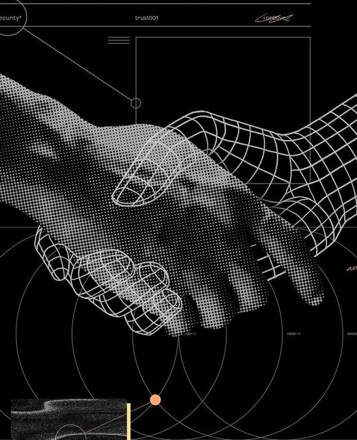

El impacto de la nueva web
¿En qué áreas se aplica?
- 🎓Educación: plataformas adaptativas que ajustan los contenidos al ritmo de cada estudiante, con laboratorios virtuales.
- 🏥Salud: citas, expedientes y telemedicina seguros, con asistentes que orientan a pacientes y personal médico.
- 🛒Comercio electrónico: tiendas con probadores virtuales, recomendaciones personalizadas y pagos instantáneos.
- 🏛️Gobierno y servicios: trámites en línea ágiles, transparentes y disponibles todo el día desde cualquier dispositivo.
Espacio para imagen
ia-web.jpg
ia-web.jpg

Espacio para imagen
webxr.jpg
webxr.jpg
Espacio para imagen
nube.jpg
nube.jpg

¿Cómo influirá en nuestra vida diaria?
Las páginas dejarán de ser iguales para todos: se adaptarán al idioma, a las necesidades y a los hábitos de cada persona. Estudiar, comprar, trabajar o hacer trámites será más rápido y natural, desde el celular o desde un visor de realidad virtual.
¿Qué pasará con el empleo y la ética?
La IA automatizará tareas repetitivas y aumentará la demanda de perfiles que diseñen, revisen y supervisen sistemas: especialistas en experiencia de usuario, seguridad y accesibilidad. El gran reto será proteger la privacidad y lograr que la web siga siendo inclusiva.